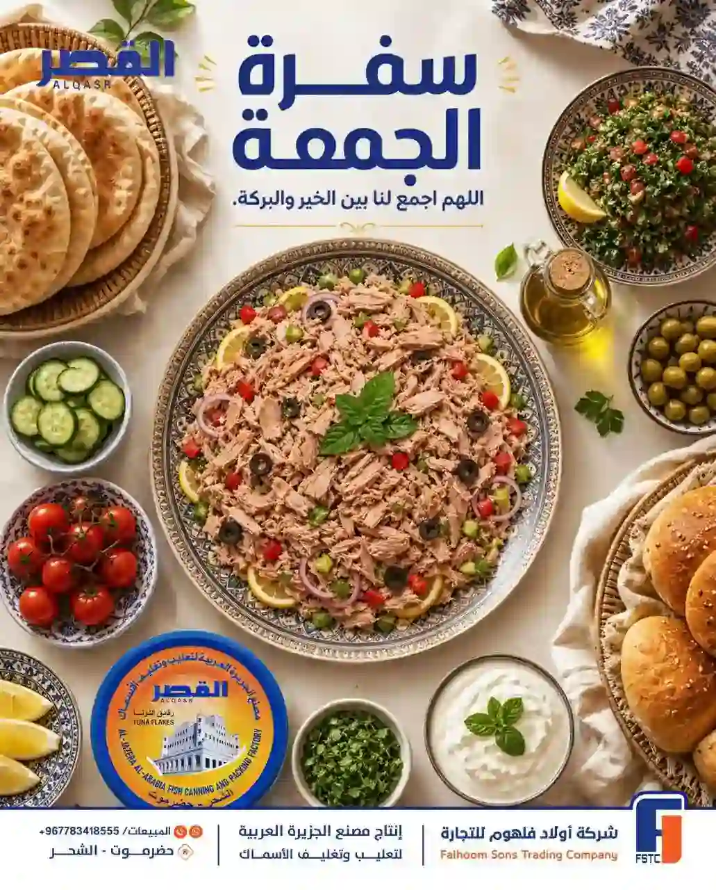
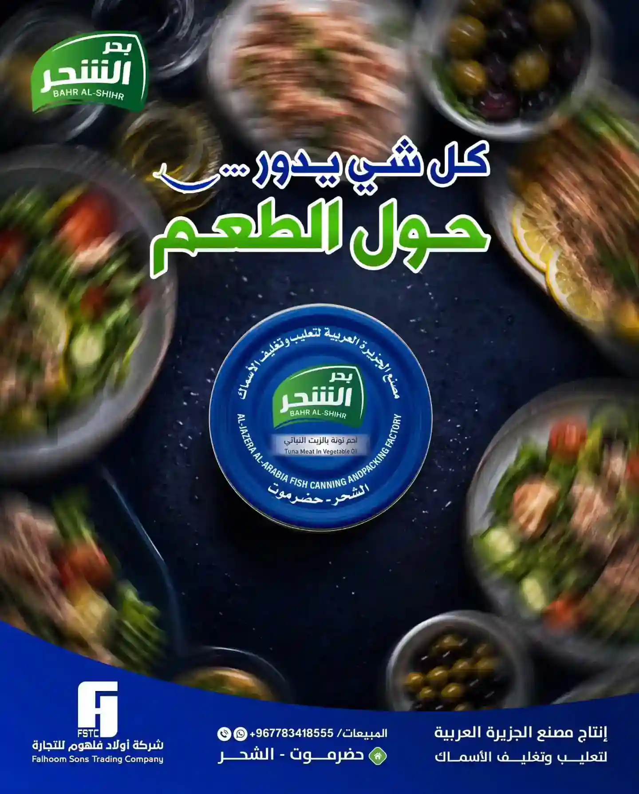
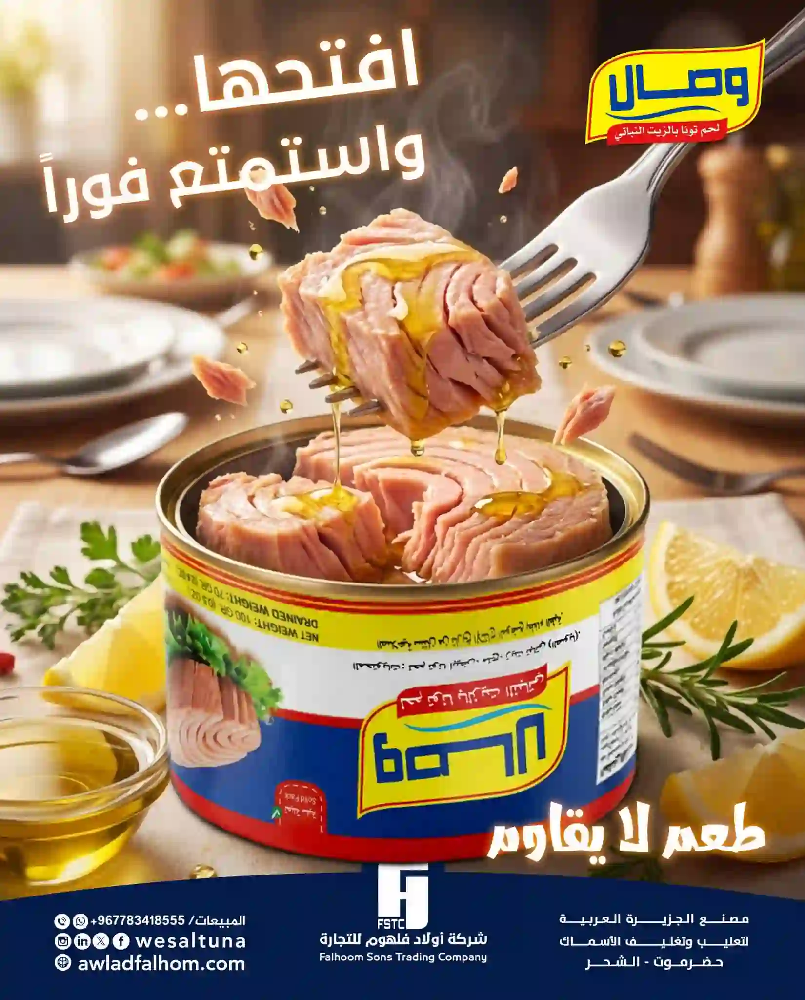
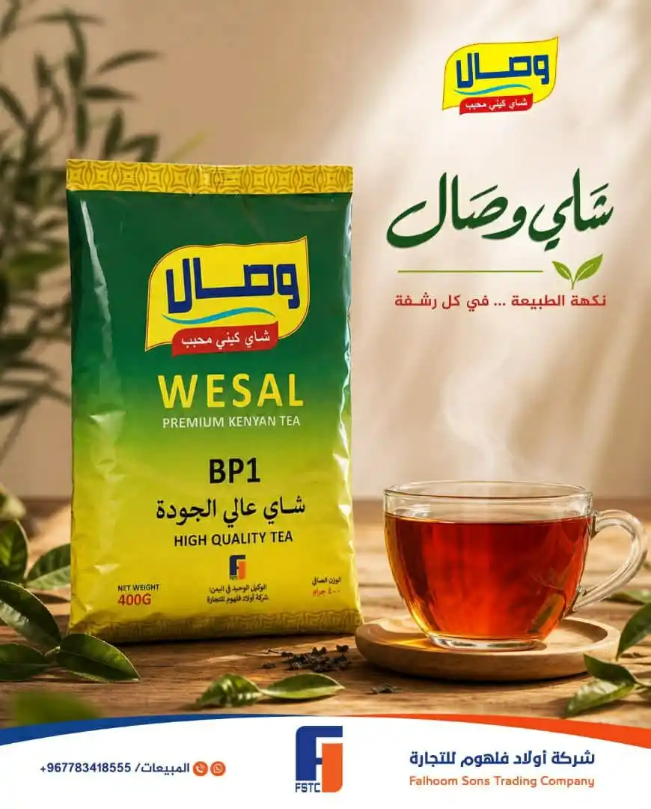

أربع علامات فاخرة، وكل واحدة بقصتها ومذاقها.

تونة بجودة عالية تناسب الوجبات الراقية والسلطات.

من مصنع الجزيرة العربية – الشحر، حضرموت.

طعم غني للوجبات السريعة والوصفات المنزلية.

لون ونكهة أصيلان لكل صباح ومجلس.
مرّر المؤشر لترى التأثير ثلاثي الأبعاد، وانقر للتكبير.
في مكان بارد وجاف بعيدًا عن الشمس. وبعد فتح العلبة تُحفظ في الثلاجة وتُستهلك سريعًا. راجع بيانات العبوة.
التونة مصدر جيد للبروتين، وتفاصيل القيم الغذائية مكتوبة على كل عبوة.
لكل علامة مذاقها وفئتها؛ تواصل معنا لنرشح لك الأنسب لمتجرك.